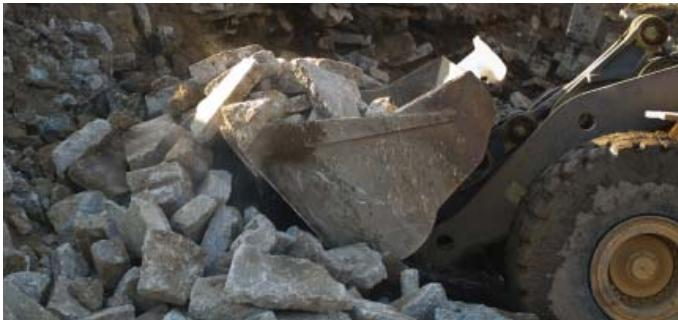
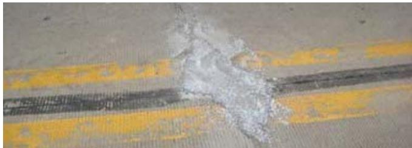

Pavement Design
Pavement design is the engineering discipline that determines how a road will be built so that it can safely carry expected traffic over its intended service life while providing acceptable ride quality, durability, and cost efficiency. The process involves selecting the appropriate structural type, material composition, and surface texture to meet performance objectives such as load-bearing capacity and noise control by balancing traffic loading, environmental conditions, and lifecycle cost considerations [1] [2]. Designers determine the sequence of layers from subgrade through base and surface courses, along with their respective thicknesses, based on key inputs including traffic characteristics, soil strength, climate variables, and drainage requirements [1]. Material properties such as stiffness, strength, thermal expansion, and moisture susceptibility are matched to these conditions, and the interaction among layers is evaluated using established analytical frameworks that translate input data into required structural capacities [1]. A fundamental step in this process is the evaluation of existing pavement condition through records review and nondestructive testing to verify support uniformity, ensuring that design decisions address all system components to achieve desired service life as economically as possible [2].
Pavement Design unifies the engineering decisions that determine how road surfaces perform, last, and impact the environment. Overlay Technology enables pavement design to optimize structural capacity and extend service life by strategically placing new layers over existing roadways. Pavement Types defines the structural form and reinforcement strategy of road surfaces to enable engineers to select materials that optimize sustainability, durability, and performance. Construction Insights provides the critical execution protocols that translate sustainable design principles into durable, high-performance concrete pavements. Recycling Innovation advances pavement design by integrating waste-derived materials into concrete structures to enhance sustainability and performance optimization.
Sources (4)
Sub-concepts (4)
Fundamentals
Pavement design is an engineering discipline that determines the structural configuration and material selection required for a road to safely support expected traffic loads over its intended service life while maintaining acceptable ride quality and durability [1]. The process involves selecting appropriate pavement types, layer sequences, and thicknesses by evaluating key inputs such as traffic characteristics, subgrade strength, climate variables, and drainage requirements to ensure the system performs under specific environmental conditions [1]. Designers balance structural capacity, construction complexity, and lifecycle costs by matching material properties like stiffness and moisture susceptibility to site-specific demands, often utilizing mechanistic-empirical frameworks or established guidelines to translate input data into required structural capacities [1]. A fundamental step in the design process is evaluating existing pavement conditions through records review and nondestructive testing to verify support uniformity, which informs trade-offs between different treatment strategies such as bonded versus unbonded overlays [2].
The following figure illustrates how center slab deflection varies along a project when normalized to a standard 9,000 lbf loading.
 Center slab deflection variation along a project normalized to a 9,000 lbf loading. [2]
Center slab deflection variation along a project normalized to a 9,000 lbf loading. [2]
The figure plots the normalized maximum deflection of pavement slabs against the distance along the roadway in feet. This data illustrates how surface deflections vary spatially, which is essential for identifying subsections where distress or poor moisture conditions may be affecting the pavement structure. Such measurements are used to backcalculate fundamental engineering properties of the concrete and subgrade soil to assess structural condition.
Key findings
- Found that bonded overlays create a monolithic pavement structure with the existing pavement to add structural value and eliminate surface distresses, but require the underlying pavement to be free of structural distress and aligned joints [1] [2].
- Demonstrated that recycled concrete aggregate consistently outperforms virgin aggregate for unbound or stabilized bases by providing greater shear strength, improved rutting resistance, and higher resilient modulus [3].
- Identified the two-lift composite pavement as the preferred configuration because it allows designers to place high-quality aggregate in a thin upper lift while using recycled material in the thicker lower lift, thereby reducing costs and environmental impacts without degrading surface performance [1].
- Established that solar reflectance is the single most important pavement material property affecting thermal behavior, with concrete values ranging from 0.2 to 0.5 depending on mix constituents and age [1].
- Showed that concrete pavements previously overlaid with asphalt represent a viable opportunity for rehabilitation if the underlying slab remains structurally sound, allowing for cost-effective preservation actions such as slab stabilization and diamond grinding [2].
- Confirmed that uniform support is the decisive factor for successful overlay performance, with any deviation from uniform support identified as the root cause of premature failures across all overlay strategies [2].
- Observed that thick geotextile fabrics increasingly serve as effective separation layers for unbonded overlays, enabling independent movement and preventing crack propagation where historical asphalt sheets were previously used [1].
Sustainable Materials and Recycling Applications
Evidence: 4 reports (3 primary)
Sustainable pavement design increasingly incorporates recycled materials, such as crushed concrete, to replace virgin aggregates in base layers, thereby reducing resource consumption and environmental impact [3]. These recycled aggregates often possess distinct physical properties, including higher roughness and shear strength, which can enhance the structural performance and rutting resistance of the pavement structure [3].
The following figure illustrates a concrete pavement prepared for recycling.

Crushed concrete pavement material being processed by heavy machinery. [3]The image displays a pile of broken, irregular grey blocks identified as concrete pavement undergoing recycling operations.
Research problem — Existing concrete and composite pavements frequently fail to deliver the uniform support and durability required for long-term service, yet agencies often overlook these deficiencies when selecting preservation treatments [2]. Designers must address systemic issues such as excessive noise, moisture ingress, and structural degradation by balancing environmental impact with performance goals rather than relying on conventional overlay strategies that ignore underlying slab conditions [2]. Conventional repair methods are often insufficient for severe joint deterioration, creating a need to evaluate in-place recycling of existing concrete into recycled aggregate bases while ensuring material quality through rigorous testing for distresses like alkali-silica reaction [3].
The following figure illustrates a pre-overlay repair of a spalled joint.

Pre-overlay repair of spalled joint (photo courtesy of Todd LaTorella, MO/KS ACPA) [3]The image displays a concrete pavement surface featuring yellow longitudinal markings and a dark transverse joint. A patch of light-colored material has been applied to the area surrounding the joint, indicating pre-overlay repair work on spalled concrete.
State of the art — The field has converged on mechanistic-empirical design frameworks that integrate sustainability metrics with structural performance, enabling the routine incorporation of recycled aggregates and supplementary cementitious materials to reduce environmental impact while maintaining durability [1]. Current practice prioritizes preservation-focused strategies, such as concrete overlays and slab stabilization using polyurethane foam, which extend service life by decades and offer significant societal benefits including noise reduction and improved friction without the high carbon footprint of full reconstruction [2]. Emerging sustainable technologies, including fully permeable concrete systems and modular precast components, are gaining traction for their stormwater management capabilities and reduced greenhouse gas emissions, although structural limitations currently restrict some innovations to low-traffic applications [1].
The following figure illustrates a permeable interlocking concrete pavement system.
 Cross-section of a permeable interlocking concrete pavement system showing its layered construction. [1]
Cross-section of a permeable interlocking concrete pavement system showing its layered construction. [1]
The figure displays the vertical stratification of a permeable pavement, consisting of surface pavers separated by gravel, resting on a bedding layer and two distinct open-graded granular base layers above a compacted subgrade.
Findings from the reports
- Identified material stewardship, structural reliability, and thermal performance as the three cross-cutting imperatives defining modern pavement design [1].
- Demonstrated that the two-lift composite pavement configuration reduces material costs and transport-related environmental impacts by placing high-quality aggregate in a thin upper lift while utilizing locally sourced or recycled materials in the thicker lower lift [1].
- Established that solar reflectance is the single most important pavement material property governing thermal performance, with concrete values varying based on mix constituents and age [1].
- Observed that bonded overlays are effective only when the underlying pavement is free of structural distress and properly aligned joints to prevent crack reflection [1].
- Showed that thick geotextile fabrics increasingly serve as successful separation layers in unbonded overlays, enabling independent movement and preventing crack propagation [1].
- Found that uniform support conditions are the decisive factor for satisfactory overlay performance, with deviations from uniformity identified as the root cause of premature failures [2].
- Revealed that concrete pavements previously overlaid with asphalt offer a cost-effective preservation opportunity if the underlying slab remains structurally sound and receives appropriate treatment [2].
- Evaluated recycled concrete aggregate as an engineered material for unbound or stabilized bases, noting it consistently outperforms virgin aggregate in shear strength, rutting resistance, and resilient modulus [3].
Novelty & rigor — Research introduces a preservation-first philosophy that treats deteriorating concrete as a recoverable asset, utilizing lightweight polyurethane foam for void stabilization to avoid the environmental and material costs of full reconstruction [2]. Novelty lies in codifying uniform support as the sole prerequisite for overlay success, supported by a systematic evaluation framework that maps condition assessments directly to specific repair and overlay solutions [2]. Reproducibility is ensured through disciplined sequential protocols involving nondestructive testing, precise material sourcing to established standards, and strict construction controls for curing and joint protection [1] [4].
The figure below illustrates how specific pavement conditions dictate the selection of appropriate concrete overlay solutions and necessary preliminary repairs.
 Flowchart for selecting concrete overlay solutions based on pavement condition and repair needs. [2]
Flowchart for selecting concrete overlay solutions based on pavement condition and repair needs. [2]
The figure displays a decision matrix that categorizes existing pavement into Good, Fair, Poor, and Deteriorated conditions to determine the appropriate maintenance strategy. For each condition level, the chart evaluates whether specific repair techniques—such as spot repairs, milling, or patching—can cost-effectively resolve deficiencies before recommending a final solution like a bonded overlay, unbonded overlay, or reconstruction.
Reported values
| Parameter | Value | Context | Source |
|---|---|---|---|
| albedo (solar reflectance) | 0.2 and 0.5 | concrete pavement | [1] |
| overlay thickness | 6 to 11 in. | unbonded concrete overlays | [1] |
| separation layer thickness | 1 in. | hot mix asphalt separation layer for unbonded overlays | [1] |
| diamond grinding area | 1 million yd2 | previously asphalt-overlaid concrete freeway pavements in the Phoenix area by ADOT | [2] |
| overlay thickness limit for preservation | ≤4 in. | thin bonded and unbonded concrete overlays used as preservation treatments by highway agencies | [2] |
| service life extension | 15 to 30 years | concrete overlays placed on existing concrete and composite pavements | [2] |
Across the reviewed reports, recycled concrete aggregate is established as a high-performance engineered material that consistently outperforms virgin aggregate in unbound or stabilized base applications by offering superior shear strength and resilient modulus, provided its properties are rigorously determined prior to use. While the integration of recycled materials significantly reduces transport-related environmental impacts and extends service life, successful implementation requires strict adherence to uniform support conditions and specific testing protocols to mitigate risks such as alkali-silicate reaction or thermal deformation. [1] [2] [3]
Implications — Designers should treat locally sourced and recycled aggregates as a standard lever for reducing material costs and carbon emissions, embedding durability checks into mix designs [1]. Reconstruction efforts must be viewed as opportunities to recycle existing concrete into high-quality base materials, adjusting specifications to exploit the superior shear strength and rutting resistance of recycled aggregates while screening for chemical pathologies [3]. Modern pavement design must balance resource efficiency through recycled materials with climate mitigation by prioritizing solar reflectance, requiring agencies to incorporate high-albedo specifications despite interactions with durability and cost considerations [1].
Limitations — Recycled concrete aggregate cannot serve as a direct substitute for conventional materials without prior verification of its properties and potential adjustments to mixture designs [1]. The application of recycled concrete in base layers is restricted by the necessity to screen reclaimed material for specific chemical distresses, such as alkali-silicate reaction, before acceptance [3].
Related concepts
In this hierarchy
- Child: Overlay Technology
- Child: Pavement Types
- Child: Construction Insights
- Child: Recycling Innovation
Related by shared evidence
- Aggregate Management — shares 4 reports
- Cement Chemistry — shares 4 reports
- Cementitious Materials — shares 4 reports
- Concrete Mixture Design — shares 4 reports
- Concrete Production — shares 4 reports
- Concrete Testing — shares 4 reports
- Cracking Mitigation — shares 4 reports
- Joint Maintenance — shares 4 reports
Similar topics
- Pavement Management
- Paving Operations
- Overlay Technology
- Pavement Management
- Pavement Repair
- Surface Textures
- Recycling Innovation
- Cementitious Materials
References
- Integrated Materials and Construction Practices for Concrete Pavement: A STATE-OF-THE-PRACTICE MANUAL (2019)
- Concrete Pavement Preservation Guide (Third Edition) (2022)
- Guide to the Prevention and Restoration of Early Joint Deterioration inConcrete Pavements (2016)
- Best Practices Manual: Quality Control and Quality Acceptance of Concrete Airport Pavement (2025)
Feedback on this page